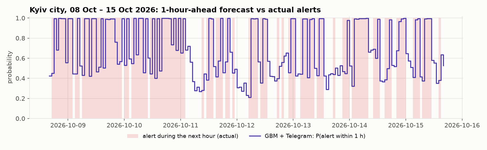
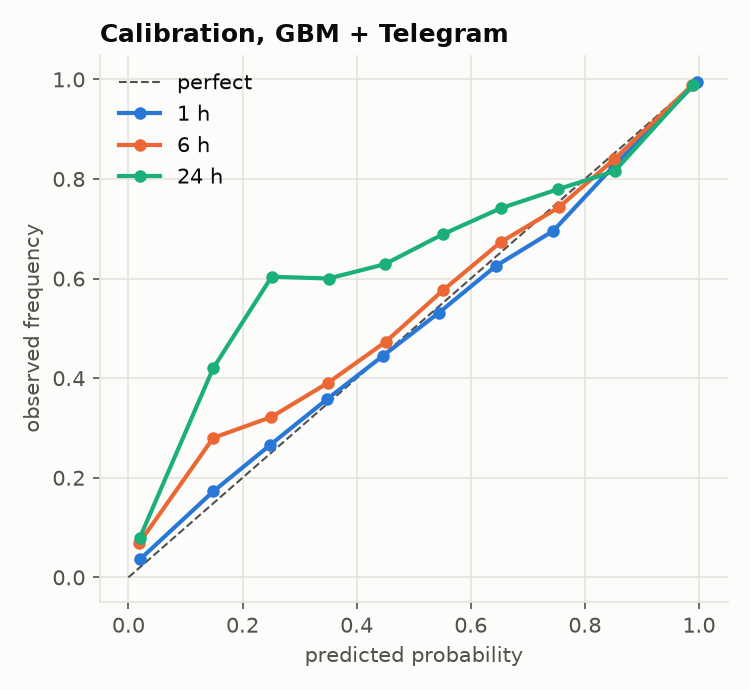

Forecasting air-raid alerts across Ukraine
For every raion and Kyiv city, the model estimates the chance that an alert will be active at some point in the next 1, 3, 6 or 24 hours. On the newest month of data it beats persistence and seasonal baselines at every horizon.
What the model predicts
At each full hour, will any minute inside the window be under alert? Bars are drawn to scale from the forecast time. Percentages show how often that was true in the latest test month.
This is a research project built for KSE AI Agentic School, not a safety system. When there is an alert, follow the official sources.
It ranks risk better than the obvious guesses
The two baselines are what you could do without a model: assume the current state continues, or repeat what usually happens at this hour. Pick a test and see where each approach lands.
- Persistence
- Seasonal (hour of day, 28 days)
- GBM, gradient boosting on alert history
- GBM + Telegram text features
No alert right now keeps only the hours when nothing is active at forecast time. There the task is to predict a new alert, which is the useful and hard part. When an alert is already on, that fact alone gives a high score.
Walk-forward testing means the model is retrained every week using only rows whose outcomes were fully known before that week began. Dots show one number per model; the axis range changes with the metric.
September was a different month
The newest test falls in a period of sharp escalation. Alerts became more frequent while their length stayed the same, so the model faced base rates it had not seen in training.
Share of raion-hours with an alert in the window
- Kyiv city, time under alert
- 14.6% to 32.6%
- Posts about Kyiv per day, war_monitor
- 10 to 38
- Median alert length
- 34 to 37 min
Aug 10 – Sep 6 compared with Sep 13 – Oct 11.
An independent source that agrees with the alert data.
Practically unchanged, so this is more alerts, not a change in how they are recorded.


One model per horizon, one rule about time
Everything the model reads was published before the forecast time. That rule is enforced by a test that tries to break it.
- Unit
-
118 raions that had at least 20 raion-level alerts since 2025-11-01, plus Kyiv city: 119 units.
A raion is under alert when its own raion-level alert or an oblast-level alert of its oblast is active. Hromada alerts cover only part of a raion, so they are a feature, not part of the target. Using whole oblasts instead made frontline regions 90–100% "on", which says nothing.
- Target
-
At every full hour
t: was any minute of[t, t+H)under alert, for H of 1, 3, 6 and 24 hours. - Inputs
-
Alert history for the unit and its neighbours: what is active now, lags, rates over several windows, and a memory of that unit at that time of day. Plus keyword and region features from two public Telegram channels, the Air Force of Ukraine (
kpszsu) andwar_monitor, expressed as shares relative to the last 7 days because the channels post more in autumn. - Model
-
scikit-learn
HistGradientBoostingClassifier, one global model per horizon across all units, with unit and oblast as categorical features. LightGBM was the first choice, but on macOS it needs a system library; HistGB is the same algorithm family with no extra setup for anyone running the repository.
The cut at forecast time
- Alert now means minute t−1. Lags use complete hours before t.
- Edited posts are dropped. The web preview shows the current text, which may contain information added after publication (1–2% of posts).
- Training rows are filtered. A row at t is used for a fold starting at T only if t + H ≤ T, so its outcome was already known.
- Gaps never become zeros. Rates use the known part of their window. Targets that touch a gap are left out.
- A test enforces it. tests/test_leakage.py corrupts all data from a cutoff on, including a post published exactly at the cutoff, and checks that no earlier feature changes.
- The test was checked in reverse. Re-introducing any of three known leaks makes it fail, so it is known to catch them.
Four sources, one common frame
No single source covers the whole period, so each was verified against the others before use, and the stretches where none is reliable were treated as gaps.
| Source | Period used | What to know |
|---|---|---|
| Air-raid sirens dataset (GitHub, Vadimkin) | 2025-11-01 to 2026-09-07 | Official alerts with oblast, raion and hromada level. Updates stopped on 2026-09-07. |
| alerts.in.ua API | 2026-09-16 to 2026-10-15 | Official alerts with raion level and alert colour. Only the last month is available, so the cached responses are committed. |
| Third-party oblast export | 2026-09-13 to 2026-10-12 | Checked against the official data: all 8,471 records for August 2026 match to the second. Oblast level only. |
| Telegram: kpszsu, war_monitor | 2025-10-25 to 2026-10-15 | Scraped from the public web preview of each channel. |
The format changed in November 2025
Alerts moved from oblast level to raion level, so training starts on 2025-11-01 and the history keeps one consistent meaning.
38% of the official rows were duplicates
113,845 of 299,275 rows were exact repeats and are removed. The first de-duplication key silently merged different hromadas, which is why hromada is part of the key now.
The API did not match its documentation
Raion alerts carry the raion name in location_title, every city alert duplicates its hromada's alert to the minute, and three raions were renamed. After mapping, every API raion matches a unit.
Nine days are missing at raion level
No source is accurate for 2026-09-07 to 09-15. The third-party file has three to four times fewer records per day there, plus a fake Kyiv region whose alerts all last exactly 30 minutes. It is treated as a gap.
What the results do not show
The numbers are good, and they have edges. These are the ones to keep in mind before relying on any of them.
- The fresh test starts right after a nine-day gap. After a gap the model needs about three weeks before its 24-hour forecasts fully recover.
- Probabilities drift under a regime shift. At 24 hours they were too low in September and October. Recency-weighted training or online recalibration is the next step.
- Telegram helps only a little. It gives the best result in the fresh period and slightly hurts in August. Keyword features map to oblasts, so they cannot say which raion a drone is heading to.
- The 24-hour oblast target is nearly saturated. Its base rate is 0.85, so it says little, and persistence has the best AUC there.
- Kyiv's new alert system is tangled with the escalation. Possible concept drift after 2026-09-06 cannot be separated from the real increase in alerts with the data available.
How the model got here
Each version was a response to a specific failure. The discarded results are kept in reports/ablation/.
-
Target: oblast to raion
Oblast-wide alert became own raion or oblast alert. The first target was 90–100% "on" for frontline oblasts.
-
De-duplication key
Added hromada to the key. The first key silently merged different hromadas.
-
Features: time-of-day memory
Added unit-by-hour memory and a 30-day rate. The model had lost to both baselines at 24 hours.
-
Gaps: partial windows
Rates use the known part of a window instead of going missing. After the gap, 28 and 30-day features were empty for a whole month. 24-hour AUC went from 0.916 to 0.940.
-
Text: relative volume
Raw post counts became shares and volume against the last 7 days. Channels post two to three times more in autumn, and raw counts made the model worse.
-
API adapter
Followed the real responses, not the docs. Raion name from location_title, city rows dropped, snapshot time taken from the JSON because file times change on git clone.
Run it yourself
All scraped and API data behind the results is committed, so these commands reproduce the numbers without network access. Only the GitHub CSV is downloaded automatically.
# set up python3 -m venv .venv && .venv/bin/pip install -r requirements.txt # fresh test, Sep 16 – Oct 15 .venv/bin/python main.py --sources sirens_csv alerts_in_ua --test-days 29 \ --telegram kpszsu war_monitor --out raion_fresh # August test .venv/bin/python main.py --telegram kpszsu war_monitor # oblast check, Sep 13 – Oct 12 .venv/bin/python main.py --level oblast --sources sirens_csv oblast_csv \ --test-days 29 --telegram kpszsu war_monitor # plots and leakage tests for d in raion_fresh raion oblast; do .venv/bin/python -m src.report reports/$d; done .venv/bin/python -m src.eda .venv/bin/python -m pytest tests
main.pyData, features, walk-forward backtest, reportssrc/data.pyAlert sources into one frame of minute-by-unit matricessrc/features.pyHourly features and targets, with gap handlingsrc/models.pyBaselines and gradient boostingsrc/evaluate.pyWalk-forward folds and metricssrc/telegram.pyResumable scraper for public channelssrc/alerts_in_ua.pyAPI adapter, token read from the environmenttests/test_leakage.pyCorrupts the future and checks nothing earlier moves